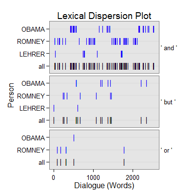
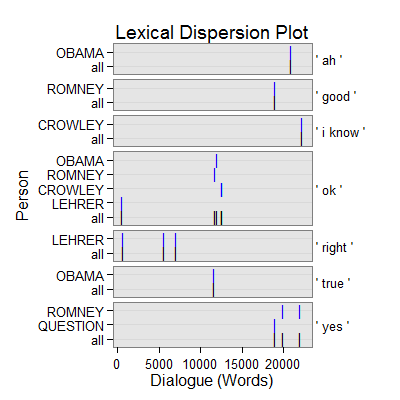

dc_backchannel(text.var, grouping.var, n.before = 1, tot = FALSE, n.after = n.before, ord.inds = TRUE, markup = c("<<", ">>"), name = "backchannel", fun1, fun2 = NULL, ...)
TRUE condenses sub-units (e.g., sentences)
into turns of talk for that grouping.var.TRUE inds is ordered least to greatest.c("", "") to not mark the backchannel discourse
markers.termco and
trans_context. The function in dc_backchannel
ensures that each sentence is less than n words in length. The defaut number
of words is 3 or less. This can be changed by supplying an argument to
max via control. For example to set the number of words to 5
use: control = list(max = 2)).termco and
trans_context. The function in dc_backchannel
ensures that the speaker's turn is at max one row (1 sentence if
sentSplit has been used).termco.Returns returns a list of 2:
countsA termco object of backchannel discourse marker counts.
backchannelA trans_context object of backchannel discourse connectors in context.
Extract backchannel discourse connectors in context.
Backchannels are typically a listener indicating that they are
listening and yielding the floor to the speaker. Such utterances are rarely
less than a few words. The anonymous function passed to fun1 checks
that a line contains a maximum of three words to be considered. This can be
changed by supplying an argument to max via control. For
example to set the number of words to 5 use: control = list(max = 2)).
Additionally, the second function fun2 ensures that the speaker's turn
is at max one row (1 sentence if sentSplit has been used).
Ward, N. (2000, October). Issues in the Transcription of English Conversational Grunts. Proceedings of the 1st SIGdial Workshop on Discourse and Dialogue (pp. 29-35). Hong Kong: Association for Computational Linguistics. Retrieved from http://www.aclweb.org/anthology/W00-1004
Linguistic Data Consortium. (2004) Simple metadata annotation specification (MDE). University of Pennsylvania. Retrieved from http://www.itl.nist.gov/iad/mig/tests/rt/2004-fall/docs/SimpleMDE_V6.2-draft.pdf
out <- with(pres_debates2012[1:2000, ], dc_backchannel(dialogue, person))
out[1]$counts person word.count backchannel 1 OBAMA 12320 3(.02%) 2 ROMNEY 12929 4(.03%) 3 CROWLEY 1672 3(.18%) 4 LEHRER 765 4(.52%) 5 QUESTION 583 1(.17%) 6 SCHIEFFER 505 0out[2]$backchannel =================================== Event 1: [lines 39-41] OBAMA: but but but overall. ** LEHRER: <<OK>>. OBAMA: And so| =================================== Event 2: [lines 51-53] ROMNEY: The president said that the government can provide the service at lower cost and without a profit. ** LEHRER: All <<right>>. ROMNEY: If that's the case, then it will always be the best product that people can purchase. =================================== Event 3: [lines 377-379] ROMNEY: The proof of that is that fifty percent of college graduates this year can't find work. ** LEHRER: All <<right>>. ROMNEY: We know that the path we're taking is not working. =================================== Event 4: [lines 465-467] ROMNEY: What's happening in the Middle East, there are developments around the world that are of real concern. ** LEHRER: All <<right>>. ROMNEY: And Republicans and Democrats both love America. =================================== Event 5: [lines 766-768] ROMNEY: So how much did you cut? ** OBAMA: Not <<true>>. ROMNEY: How much did you cut them by, then? =================================== Event 6: [lines 784-786] OBAMA: So if you want to drill on public lands, you use it or you lose it. ** ROMNEY: <<OK>>, | OBAMA: And so what we did was take away those leases. =================================== Event 7: [lines 807-809] ROMNEY: That wasn't the question. ** OBAMA: <<OK>>. ROMNEY: That was a statement. =================================== Event 8: [lines 859-861] ROMNEY: They're real jobs. ** CROWLEY: <<OK>>. ROMNEY: I appreciate wind jobs in Iowa and across our country. =================================== Event 9: [lines 863-865] ROMNEY: I'm going to make sure| ** CROWLEY: <<OK>>. ROMNEY: we're taking advantage of our energy resources. =================================== Event 10: [lines 1302-1304] ROMNEY: Lorraine? ** QUESTION: <<Yes>>, Lorraine. ROMNEY: Lorraine. =================================== Event 11: [lines 1305-1307] QUESTION: How you doing? ** ROMNEY: <<Good>>, thanks. QUESTION: Mister Romney, what do you plan on doing with immigrants without their green cards that are currently living here as productive members of society? =================================== Event 12: [lines 1375-1377] CROWLEY: Let's speak to, if you could| ** ROMNEY: <<Yes>>. CROWLEY: the idea of self deportation? =================================== Event 13: [lines 1460-1462] QUESTION: This question actually comes from a brain trust of my friends at Global Telecom Supply in Minneola yesterday. ** OBAMA: <<Ah>>. QUESTION: We were sitting around, talking about Libya, and we were reading and became aware of reports that the State Department refused extra security for our embassy in Benghazi, Libya, prior to the attacks that killed four Americans. =================================== Event 14: [lines 1524-1526] CROWLEY: Governor, if you want to| ** ROMNEY: <<Yes>>, I I| CROWLEY: quickly to this please. =================================== Event 15: [lines 1550-1552] OBAMA: I'm happy to have a longer conversation | ** CROWLEY: <<I know>> you| OBAMA: about foreign policy.plot(out)
## Save externally use .doc or .txt ## print(out[[2]], file="backchannel.doc")